|
Texten ur Stockholmsliv II, Staffan Tjerneld, 1950
Namnet Långholmen ger ju i sig självt endast en enkel geografisk upplysning, och det är ett
vanligt namn på långa och smala holmar i vårt land. I det allmänna medvetandet har emellertid
ordet sedan mycket länge haft en mörk klang, vilket naturligtvis beror på att det tagit färg och
innebörd av den korrektionsinrättning, som i olika former i över tvåhundra år varit belägen på
Långholmen i Stockholm.
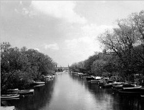
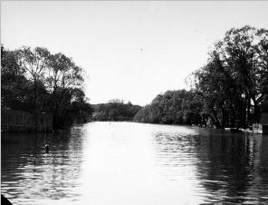
Pålsundet mot öster.... och mot väster
Då Stockholms stad nu planerar att befria den vackra Mälarön från dess dystra börda, kan det
vara skäl att här något anknyta till vad vi vet om dess äldre historia.
Det är i ett storpolitiskt sammanhang som Långholmen första gången skymtar i
urkunderna, Engelbrekts belägring av Stockholm 1435.
»Engelbrekt sig uppå Långholmen lade vässmän och närikar med
sig hade»,
heter det i rimkrönikan. Något senare samma år, sedan dagtingan slutits, samlade sig, uppges det
vidare, Svea rikes råd, trettiosju förnäma herrar, på Långholmen och förband sig att hålla det
fördrag som ingåtts med Erik XIII i Halmstad, om denne höll sitt löfte men att annars med liv och
gods försvara sina rättigheter och Sveriges lag.
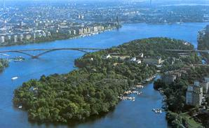
|
|
Långholmens stora strategiska betydelse genom läget i sundet mellan Kungsholmen och
Södermalm gör sig även i fortsättningen gällande. Gustav Vasa skall vid sin belägring av
Stockholm 1523 ha dragit en flottbro från Kungsholmen till ön, och då hertigarna Johan och Karl
belägrade sin broder Erik i huvudstaden skall ön åter ha fått tjäna som ett brofäste. Sedan blev ju
den uppgiften onödig, men efter tullverkets inrättande 1622 fick ön en viktig funktion som
tullplats.
|
Långholmen tillhörde kronan tills den år 1647 överlämnades till Stockholm genom ett öppet brev, i vilket drottning Kristina med vissa förbehåll skänkte staden
hela Munkalägret (det vill säga Kungsholmen), hela Bäck- eller Tjärholmen och hela Långholmen.
Förbehållet vad Långholmen beträffar gällde kronans rätt att där ha tullplats och så stor sjöhamn
som behövdes. Säkerligen har tullen givit Långholmen dess första fasta bebyggelse.
Tullhusen förlades till en
vik på öns norra sida. Två byggnader, Stora och Lilla Henriksvik, har sin plats på
äldsta tullområdet.
På 1780-talet flyttades tullen ett par hundra meter väster ut till den plats som på
en karta från 1773 kallas »stålfabrikören Olof Becklins tomt».Där uppfördes en vacker
stenbyggnad, som fortfarande finns kvar och bär namnet Sjötullen.
|
|
Sedan tullverksamheten
under 1800-talet upphörde har huset huvudsakligen använts till bostäder åt fängelsetjänstemän.
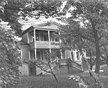
 Henriksvik Henriksvik
|
|
|
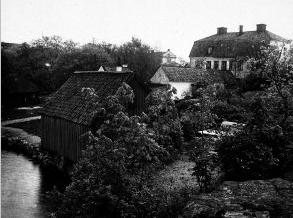
Sjötullen
Stockholm hade en väldig expansion under stormaktstidens första skede, tiden omkring
trettioåriga krigets slut (1640-talet). En mängd förmöget folk, däribland många utlänningar,
flyttade till huvudstaden och vidgade dess gränser. Snart inträder i Långholmens historia den man
som kan kallas den förste och kanske även störste Långholmsbon, borgaren och bryggaren Joakim
Ahlstedt.
|
I sina djärva och vittsyftande projekt och åtgärder visade han sig som en äkta son av sitt
tidevarv och visst är att Långholmens historia skulle blivit en annan än den blev, om Ahlstedt hade
fått värdiga efterföljare.
År 1649 »förackorderades» enligt byggnadskollegiets protokoll »med Jockem Allstädh bryggare att
han skall giva detta året för Långholmen fjorton dir silvermynt och så med holmen handla som han
vill, dock icke bebyggian». För mulbetet och fiskeriet vid Långholmen betalar Ahlstedt sedan sitt
arrende, men snart synes staden mot tomtöre ha upplåtit en särskild plats åt honom, vilken han
inhägnade, bebyggde och snart fick lust att besitta som fri och egen grund. Om staden gjort
svårigheter därvidlag vet man inte, men Ahlstedt vände sig i varje fall i en supplik till Kungl. Maj:t,
som 1666 avlät brev till borgmästare och råd i Stockholm med »rekommendation och vilja» att
Ahlstedts tomt måtte »förunnas och tillägnas honom till en rätt och fast egendom» mot villkor att
Ahlstedt fortsatte sina samhällsnyttiga företag på Långholmen.
Ahlstedt hade, heter det, nedlagt en
stor del av sin egendom på Långholmen, »där i begynnelsen sten och berg var» och han hade försäkrat att han alltjämt ville fortfara med att
»excolera» holmen och särdeles laga så att icke allenast mälteri och bryggeri det gemena bästa till
nytta skulle inrättas utan även och i synnerhet åtskilliga fiskdammar, »varest man alltid inländsk
och främmande fisk för en billig penning skall kunna bekomma». Kungl. Majt:s brev uppfattades av
magistraten som en befallning. Följande år utfärdades ett fastebrev för Ahlstedt, i vilket hans tomt
noga fastställdes efter nyföretagna mätningar. Som gränsmärken omtalas bland annat »pålar».
(Pålsundet antas ha fått sitt namn efter de talrika pålar som i skilda sammanhand slagits ner där.)

|
|
Under de följande åren nedlade Ahlstedt tydligen ett storslaget arbete på sin
Långholmsfastighet, Allstavik, som den på en gammal karta kallas. Han dog 1680 och i
bouppteckningen efter honom året därpå värderas hans stenhus med trädgård och därtill
lydande byggnader och lägenheter på Långholmen till 60 000 daler kopparmynt, en på den tiden
väldig summa, som kan jämföras med de 18 000 som Ahlstedts stenhus å fri och egen grund vid
Järntorget taxerades till. Den så kallade Fyrkanten mitt emot Långholmsbron, som från början
varit ladugård och i den egenskapen finns utmärkt på 1743 års Långholmskarta, är troligen,
åtminstone delvis, en kvarleva från Ahlstedts tid.
|
Ahlstedt var en verklig storaffärsman och som bryggare bör han ha varit den främste i
huvudstaden. Han var i varje fall ölleverantör till hovet, änkedrottningen och de förnäma husen i
Stockholm. Han hade sina svårigheter med de förnäma kunderna. Ibland måste han på rättslig väg
driva in sina fordringar. 1775 hade han till exempel en process med riksmarskalken greve Gabriel
Oxenstiernas sterbhus om en ölskuld på nära 5 000 daler, och i bouppteckningen uppges en
mängd utestående fordringar, huvudsakligen för öl men även för fisk och virke. Bland tillgångarna
i boet nämns spannmål, humle och »åtskilliga sortementer dricka» till stora belopp.
Ahlstedts rikedom avspeglar sig även i övrigt mycket tydligt i bouppteckningen. Förteckningen över
hans samling av guld, diamanter och äkta pärlor (80 st. större, 443 st. smärre pärlor) är imponerande.
Men det var många om arvet, efterleverskan i tredje giftet och tio barn i de tidigare äktenskapen.
Gravölet efter den gamle bryggaren måste ha varit ståtligt. Omkostnaderna belöpte sig till 5 431 daler, en summa för
vilken man vid denna tid kunde få en präktig gård på egen grund inom Stockholm.
Joakim Ahlstedts stolta planer på att förvandla Långholmen till ett kommersiellt kvarter i
huvudstaden gick om intet, och år 1724 såldes hans gamla egendom av handlandena Johan
Spalding och Anders Dahlström för 37 000 daler till kronan, som där förlade ett rasp- och
spinnhus. Sedan dess har Ahlstedts tomt varit fängelsemark. Korrektionsanstalten kom
därefter att sätta sin prägel på Långholmen. Redan på hösten 1724 togs den i bruk. Dit
hänvisades män som dömts för lösdriveri och mindre förseelser, vanartiga pojkar samt
lösdrivande och för olika brott dömda kvinnor. Det var en ur modern fångvårdssynpunkt
ganska hemsk anstalt, en förening av barnuppfostrings-, tvångsarbets- och straffanstalt utan
möjligheter till hjälp åt och förbättring av klientelet.
|
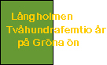
Läs
|
|
Rasp- och spinnhuset hade från början en vacklande och osäker ekonomi. Till dess drift användes
vissa bötesbelopp men främst skulle ekonomin byggas på de intagnas arbete, bland annat sådant
som gett anstalten dess namn, männens »raspande av allehanda brisilieträ», som brukades till
färgstoffer, och kvinnornas kardande och spinnande. Arbetstillgången var emellertid ofta ojämn och
de intagnas antal högst växlande. Man tänkte sig i anstaltsinstruktionen även möjligheten av att
»änkor, hustrur eller pigor» frivilligt skulle vilja arbeta inom anstalten på ackord.
|
Inom
Långholmsanstalten, liksom inom landets övriga fängelser, härskade under 1700-talet nästan helt
den merkantila synpunkten. Man kalkylerade hänsynslöst med fångarbetskraften, som ofta
utarrenderades till fabrikörer och entreprenörer. I Stadsarkivet förvaras till exempel ett ganska stort
material från 1740-60-talen om entreprenören Öhrn, som länge arrenderade det så kallade
Skutskepparvarvet i Långholmens östra del. Öhrn använde där både manlig och kvinnlig
fångarbetskraft. De intagna engagerades stundom i företag som gällde hela Stockholm, till exempel då
Öhrn 1760 slöt kontrakt med stadsmyndigheterna om stadens renhållning. Man får tänka sig att
stundom en flottilj av båtar och pråmar lämnade Långholmen på morgnarna för att återvända i
kvällningen. Någon egentlig fångvård förekom knappast. Sjukdomar härjade nästan ständigt och
dödssiffrorna var höga.
|
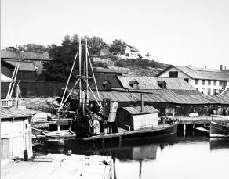
Varvet. Mudderverk
|
|
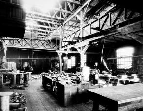
Varvet. Maskinverkstaden
|
För den »andliga vården» fanns visserligen präst och klockare, men åtminstone till den senare befattningen,
till vilken även hörde viss undervisningsskyldighet, torde man på grund av lönens uselhet ofta
ha fått nöja sig med tämligen otjänlig arbetskraft. Man kan peka på den av Bellman besjungne
»ordensklockaren och vice edsformulärförestavaren» i Bachi Orden Diedrich Johan Trundman,
vilken i handlingar från 1760-talet uppges vara skolmästare och klockare vid Spinnhuset
samtidigt som han kallas för »gamla studenten».
|
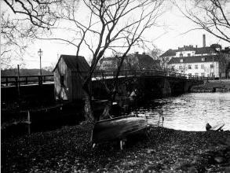
|
|
Först några decennier in i 1800-talet skedde en påtaglig förbättring av förhållandena vid
Långholmsfängelset. År 1827 uppfylldes det gamla önskemålet att skilja de manliga och kvinnliga
korrektionisterna åt. Det blev kvinnorna som bröt upp. Natten mellan den 12 och 13 juni fördes de
som nämnts tidigare i pråmar över Riddarfjärden till Norrmalm.
Långholmsanstalten utbyggdes väsentligt under 1820-talet och rymde därefter över åttahundra män,
av vilka de flesta bodde i logement. Vaktpersonalen utgjordes i huvudsak av militär och endast i den
inre tjänsten förekom civil personal. Det var ingen lätt tjänst och ofta förekom större och mindre
oroligheter.
|
|
Den mest uppmärksammade tilldragelsen av detta slag under 1800-talet var ett stort
myteri den 13 december 1853. Uppgifter från de omständliga polisförhören återgavs dag efter dag i
Aftonbladet och det kan vara skäl att här något dröja vid denna händelse, som bjärt belyser den
tidens fångvårdsförhållanden.
Upproret ägde rum i samband med ombyte av kommendant i fängelset.
Den nye direktören, kapten Telander, hade fått rykte om stränghet, vilket sammanhängde med
fängelseledningens |
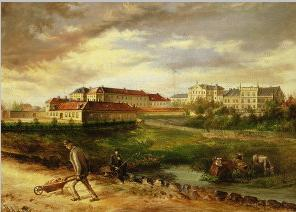
Daniel Alfred Genzell, olja, 1888
|
|
försök att få bukt med insmugglingen av brännvin.
Man hade täppt igen ett hål i
muren genom vilket brännvin flöt in. Ett annat finurligt sätt att komma över den åtrådda drycken
hade varit att gömma den i en vattenså, försedd med dubbla bottnar. Under anförarskap av tre
berusade korrektionister bröt de icke instängda fångarna upp de övrigas celler och överföll vakten,
som måste dra sig tillbaka till yttre fängelsegården i väntan på förstärkning.
|
De tre anförarna rusade
omkring på logementen och upphetsade sina kamrater. En del yttranden återges i polisrapporten.
Fången Pålsson sade med yxa i hand till de intagna på ett logement: »Har ni varit med, gossar, den
goda tiden, så skall ni vara med i den onda, jag är beredd att lägga mitt huvud under bilan för att få
mörda den blodhunden Telander», och på ett annat logement hette det mera korthugget: »Ut,
bondtjuvar, att strida!»
Fångarnas antal var sammanlagt femhundraelva. Alla ville emellertid inte deltaga i bråket,
många sökte gömma sig.
Myteristerna lyckades ta sig från den inre fängelsegården till den yttre, där
kommendantexpeditionen var belägen i den ovannämnda Fyrkanten, den låga, vackra byggnad,
som ligger mitt emot Långholmsbron. Expeditionsrummen och där förvarade handlingar
förstördes, fönsterna krossades, och det gjordes misslyckade försök att sätta eld på byggningen.
Kyrkan, sakristian och pastorsexpeditionen stormades. Hos prästen förstörde myteristerna
kyrkoboksanteckningar och handlingar rörande deras egna antecedentia.
|
Rätt snart anlände emellertid förstärkningar från olika håll, först arbetarna vid Bergsunds
bruk på Södermalm, vilka, väpnade med släggor och andra tillhyggen, fattade posto på bron
och där uppförde »en barrikad av vagnar och andra impedimenter». Bergsundarnas raska
ingripande föranledde en insamling bland allmänheten till julgåva åt dem. Från högvakten
infann sig en trupp på trettiotvå man och från vardera av gardesregementena till fots
utkommenderades hundra man. Befallning gavs till och med om att en skvadron av gardet till häst
samt två kanoner skulle framrycka till Adolf Fredriks torg (Mariatorget). Även en polisstyrka under
polismästarens eget befäl infann sig på Långholmen. Inför denna övermakt gav sig fångarna
ganska snart. Militären avlossade en del skott, som fångarna besvarade med att kasta sten.
Ingen kom dock till större skada, och ingen fånge lyckades rymma.
|
|
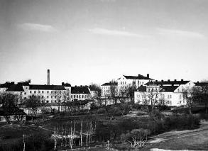
|
|
Det var naturligtvis ett spännande, man vågar säga skräckromantiskt, äventyr för huvudstaden och
det hörde väl samman med tidens populära följetongslitteratur. C. F. Ridderstad hade två år tidigare i
sin Eugene Sue-påverkade sensationsroman »Samvetet eller Stockholms-mysterier» skildrat en stort
anlagd rymningsplan i samband |
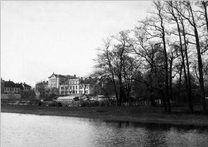
|
|
med ett upplopp i Södra korrektionsanstalten.
Antagligen hade den
sensationella berättelsen mött gensagor, ty i romanens andra upplaga 1880 ger Ridderstad i en lång
not en redogörelse för Långholmsupploppet 1853 »såsom bevis på att rymningsförsök i stor skala ej saknats vid
Långholmen».
|
Man hade fått ett eklatant bevis för det gamla logementsfängelsets farlighet och den
följande tiden ställde även ur rent humanitära synpunkter krav på en förbättrad fångvård. År
1874 började man uppföra en stor ny fängelsebyggnad av celltyp inom anstaltsområdet. Detta
nya fängelse togs i bruk 1881 och utgör fortfarande centralavdelningen inom
Långholmsanstalten. Under sina sjuttio år har den emellertid gång efter annan moderniserats.
|
|
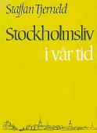
Läs
|
|
|
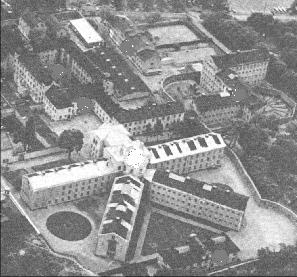
Flygbild från ostsydost, 1965
|
|
Byggnaden består av en centralkropp i fyra våningar med mottagningsrum,
expeditionslokaler, skola och kyrka samt fyra cellflyglar i vardera tre våningar för fångförvar. Där
finns omkring fyrahundrafyrtio celler av två olika typer. Av dessa används numera endast
omkring hälften till bostadsrum åt de intagna. Alla i centralavdelningen intagna är dömda till
straffarbete. Övriga kategorier tillhör anstaltens så kallade kronohäktesavdelning, som byggts
upp i olika omgångar: 1850-1876-1887. Denna avdelning ersätter nu även rannsakningsfängelset på Kungsholmen, som nedlades för några år sedan. En särskild sinnessjukavdelning
nybyggdes år 1933 i den så kallade Stengården inom fängelseområdet. På denna plats
sysslade fångarna förr i världen med stenhuggning, ett av de vanligaste fångarbetena i vårt
land genom tiderna och ett av de dystraste. »Där var bara gråsten, och gråa människor, som
sågo förstenade ut, höggo i sten, sprängde sten och buro stenar», säger Strindberg i en
Långholmssaga, till vilken vi skall återkomma.
|
Då nybyggnaderna togs i bruk förvandlades de gamla fängelselokalerna till
personalbostäder och - framför allt - verkstäder inom den växande arbetsdriften. Under de
sista decennierna har förstklassiga verkstäder inom olika yrkesgrenar inretts inom
anstalten. Härom året förvandlades anstaltens gamla grönsaksträdgård till idrottsplan, och där
spelas under sommarhalvåret fotboll och tränas idrott om vädret det tillåter. Även
utomstående har glädje av planen, inte minst barnen från Högalids folkskola, som gärna
förlägger sin gymnastiktimme dit.
|
|
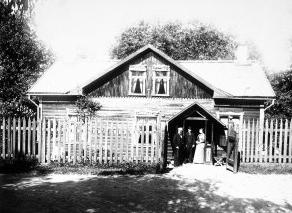
Gamla doktorsvillan
|
|
Vi har talat om kronans tullplats och den Ahlstedtska tomten som sedan blev
spinnhusområde. Redan från Långholmens äldsta bebyggelsetid är det ännu ett område, som
påkallar uppmärksamhet, den
på sydsidan av östra udden belägna plats som år 1685 av staden överlämnades som varvsplats
till skutskepparskrået. Hur verksamheten där bedrivits känner man emellertid inte till innan
den förut nämnda handelsmannen och entreprenören Öhrn år 1743 övertog platsen mot
arrende.
|
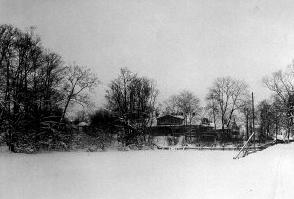
Björkhagen
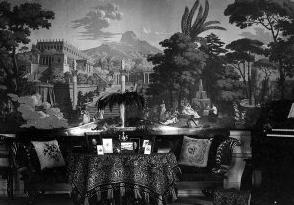
Interiör Björkhagen med tapet från Paris 1823
|
|
Öhrn var en driftig och stridbar man. Han arrenderade som vi sett spinnhusfolkets
arbetskraft, och han låg i fejd med spinnhusledningen om det mellan fängelse- och
varvstomterna belägna område, som kallades Björkhagen eller Björkskogen. Öhrn hade i sitt
kontrakt fått rätt att använda Björkhagen till mulbete och till att där utföra vissa varvsarbeten.
Tomten finge emellertid inte komma till skada, hette det, och Öhrn förbjöds till och med att
»något trä av samma skog hugga eller kvista», en aktsamhet om grönskan som givetvis beror på
att denna björkdunge utgjorde Långholmens enda sammanhängande gröna parti. Ön var ju
denna tid närmast en stor, bar stenkulle. Långholmsvarvet presenteras både i Öhrns kontrakt
och i ett senare kontrakt 1796 som »idel gråberg, hällar och några små fläckar med gräsvall
beväxte».
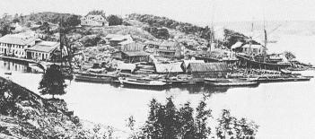
Mälarvarvet på Långholmen. Foto 1898
|
|
Större omfång fick verksamheten vid Långholmsvarvet först sedan företaget år 1827
inköpts av fabrikören S. L. Lamm. Tidigare hade endast mindre båtar kunnat byggas och
repareras där. Lamm anlade med stora kostnader en upphalningsbädd, på vilken fartyg kunde
dras upp och repareras utan att deras maskiner först lyfts ur, en anordning som lär ha varit
den första i sitt slag i riket. Långholmsvarvet hade efter Lamm flera privata innehavare men
befinner sig nu i Stockholms stads ägo.
|
|
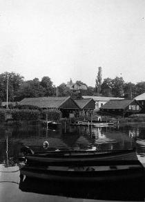
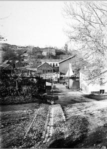
Långholmsvarvet från Pålsundsgatan
|
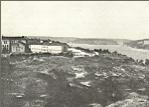
Utsikt mot väster
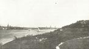
Utsikt mot öster
|
|
Sedan decennier tillbaka har stranden av Långholmen utgjort ett kärt utflyktsmål; det var länge det
enda öppna friluftsbadet inom Stockholm. Men före Västerbrons tillkomst var det bara Söderborna
själva som hittade dit. I ett trevligt kåseri om Långholmen i Dagens Nyheter 1918 omtalar signaturen
Rainer ön som i det närmaste okänd mark för stockholmarna, »de flesta veta väl ej ens hur man skall
gå för att komma dit». Kåsörens väganvisning är ju knappt mer än trettio år gammal men ger den
moderna stockholmaren en stark känsla av kulturhistoria:
»Följ med en av vita linjens spårvagnar
från Slussen och åk den långa Hornsgatan till slut. Sedan går man Långholmsgatan mot Mälarsidan
till dess den lantliga Bergsundsgatan, omgiven av gamla trevliga hus i stora, välskötta trädgårdar, för
ned till bron som går över Pålsundet till Långholmen.»
Artikeln slutar med en hänförd beskrivning av utsikten från Långholmens östra udde
över staden, och det avsnittet har ingenting förlorat i aktualitet.
|
|
|
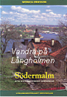
Vandra
|
|
Under senare år har hela Långholmsparken alltmer blivit en verklig folkpark med solbackar,
promenadvägar, kaffe-
servering och musikplats. På det gamla Björkhagsområdet finns numera
på sommaren ofta dansbana och tivoli och under vintern kan man åka skridsko där. Vid regn
har man Västerbron till tak.
|
|
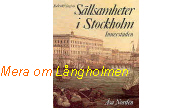
Läs
|
|
Innan spårvägstrafiken kom i gång till dessa avlägsna delar av Södermalm uppehölls
förbindelserna med staden mest sjövägen. Färjor gick mellan Riddarholmen och en del
Mälarorter i Stockholms grannskap och hade anhalter på vägen, bland annat en brygga på
Långholmen, strax öster om Långholmsbron. Bron och bryggan har en litterär anknytning, som
väl kan kallas klassisk. I Hjalmar Söderbergs novell »Blom» följer vi förre skrädderi-
arbetaren
Oskar Valdemar Napoleon Blom från fängelset efter hans niomånadersstraff och stannar med
honom ett slag på Långholmsbron, där en ledig vaktkonstapel står och metar mört på små
saffranskulor.
|
|
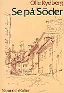
Läs
|
|
Den gamla syn Söderberg här ger skall i hans version aldrig förlora sin friskhet:
metaren och han som tittar på, blänket av fisk i vattenbrynet, pilarna utmed sundet och i
fonden långt borta »Stockholms kyrkor och torn i blått soldis, som ristade med en fin nål»,
medan en ångslup puttrar fram under bron på väg till staden och lägger till vid bryggan näst
invid.
|
|
Numera är Pålsundet under sommarmånaderna närmast en motorbåtshamn.
De enskilda lägenhetsägarna på Långholmen har alltid varit få, och de viktigaste områdena
av det slaget, Sofieberg och Karlshäll, fick först under 1800-talet sin bebyggelse. Denna del av
Långholmen har aldrig varit ordentligt tomtreglerad, och marken har sedan donationen 1647
aldrig varit ur stadens ägo; i varje fall stöder staden sin äganderätt på drottning Kristinas
donationsbrev. Jorden har emellertid upplåtits till privat bebyggelse. Sofieberg, som ligger
omkring själva udden, består av några numera rätt förfallna trähus, som tillsammans bildar en
liten by, pittoresk genom sitt idylliska läge.
|
|
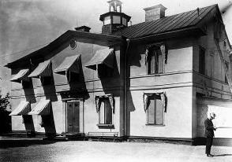
Karlshäll 1926
|
|
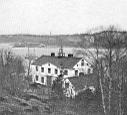
|
|
Karlshäll är till sin typ en liten herrgård med huvudbyggnad och två flyglar, alla stenhus.
Gården har till upphovsman och herre haft
en av Långholmens färgstarkaste innevånare genom tiderna, brännvinskungen, socialreformatorn och
riksdagsmannen L. O. Smith. Denne tillhör ju genom sin verksamhet främst grannön Reimersholm,
men hans innehav av »lantstället» Karlshäll gjorde honom till en mycket uppmärksammad
Långholmsbo. Karlshäll, som ligger på norra sidan av ön, omedelbart väster om Sjötullstomten, skall
på Smiths tid ha räknats bland de mest välskötta egendomarna kring Stockholm. När Smith kom i sitt
fyrspann från staden åkte han från grindstugan fram till huvudbyggnaden genom en alle av olika
slags fruktträd. Av dessa återstår nu inte annat än ett och annat halvt förvildat exemplar och några
stubbar. Hela Karlshällstomten var för övrigt på Smiths tid närmast en stor trädgård. Även sedan han
på 1890-talet lämnat stället hölls det några år i stånd.
|
Förre tjänstemannen vid
Långholmsfängelset Gustaf Löfdahl, som är född i sjötullen - även hans far var tjänsteman vid
anstalten - arbetade i sin ungdom hos en trädgårdsmästare, som arrenderade Karlshällsträdgården. Överallt i bergssluttningarna fanns fruktträd, äpplen, päron, plommon, ofta ädla
sorter, som hemförts av Smith från hans långa resor, och i de lämpliga lägena fanns drivbänkar
med grönsaker. Löfdahl fick många gånger hjälpa till att forsla ner skörden till bryggan vid
Långholmsbron, varifrån den med en tidig färja befordrades till Riddarholmen, för att sedan
säljas i ett stånd på Munkbron. Överallt på Karlshällstomten finner man fortfarande i snåren av
de vilda träd och buskar, som senare invandrat, gamla fruktträd och även degenererade
exemplar av prydnadsväxter, rosor, syrener, kaprifol med flera.
På tomten fanns även en präktig svandamm, som nu är en halvt igenvuxen grop, fylld av
bråte.
Smith hade på berget bakom gården låtit bygga upp en stor altan, som av folket kallades hans
»tankegång», därför att han troddes göra upp sina stora affärsplaner, medan han gick fram och
tillbaka däruppe. Vid festliga tillfällen fördes gästerna dit i kvällningen och då avbrändes ofta
fyrverkerier, av vilka minnet fortfarande lever. Löfdahl har hört berättas om ett tillfälle, då en
regatta ägde rum på Björkfjärden och Smith som en hälsning till de återvändande seglarna hade
ställt i ordning ett extra grant, mångfärgat fyrverkeri i form av en stor gran.
I Smiths memoarer förekommer en uppgift om Karlshäll i samband med Hjalmar Branting och
dennes fader, som det är frestande att anföra: »Den som först gaf mig sjukgymnastik, var professor
Branting i Stockholm, fader till socialisternas utkorade chef, Hjalmar Branting. Professor Branting
lefde sommartiden fritt på mitt lantställe Carlshäll, där han jämte sin familj bebodde en flygel. Där
sammanträffade jag första gången med den blifvande socialisthövdingen, en begåfvad ung man,
hvars rika gåfvor, inriktade på något ädlare och bättre, bort komma fosterlandet i afsevärd mån till
godo.»
I senare tid har Karlshäll dels använts som vårdhem för sinnessjuka, dels - under största delen
av 1940-talet - som hem för sjuka finska barn. Därefter har gården legat öde.
|
Långholmen har under sina innevånares händer i hög grad förändrat utseende. De kala berg och
hällar som i gamla kartor och beskrivningar framhålls vara karakteristiska för ön är nu ofta
jordtäckta och trädbevuxna. Ön gör från alla håll ett lummigt intryck, och mängden av ädla lövträd är
imponerande. Om hur förvandlingen skett har Strindberg skrivit den lilla stämningsfulla sagan »När
träsvalan kom i getapeln», som inte bara har poetisk giltighet utan i viktiga drag också
verklighetskaraktär. Det är om Långholmens norra sida, Mälarsidan, sagan handlar och om denna
plats får vi på en karta från år 1782 följande uppgift: »Öppen bergmark, bestående mestadels av idel
odugeliga berg.» På samma sätt tedde sig området ännu långt senare, innan man med hjälp av
fångarbetskraft började utbreda mudder på bergssluttningarna. Så skedde bland annat år 1873.
Strindberg kan ju själv ha bevittnat detta; hans saga ger i varje fall en djupare syn på saken än
uppslagsverkens torra notiser.
Fångarna utkommenderades på pråmar för att muddra nedanför stationen, berättar
Strindberg:
»Så började de att hissa opp allt orent som fanns på sjöbotten. Där kom dränkta kattor och gamla
skor, ruttet fett från stearinljusfabriken, färgfibrer från färgeriet Blå hand, garvarbark från garveriet,
och allt mänskligt elände, som tvätterskorna i hundra år sköljt ut från klappbryggan.
Och det kom en lukt av svavel och ammoniak som var så outhärdlig, att endast en fånge
kunde stå ut med den.
Men när pråmen var lastad, undrade fångarne var all denna smuts skulle avlämnas. Svaret fingo
de, när båtföraren styrde kurs på deras egen klippa.
Där lastades all dyn ut och kastades på berget, där luften snart var förpestad. Och de vadade i
smuts, och de smutsade sina kläder, händer, ansikten.
Detta är helvetet! sade fångarne.»
Undret i sagan liksom i verkligheten är ju att klippan sedan förvandlas till en »ljuvlig
grönskande lund, där löven glittrade i vinden som småvågor på sjön. Där voro höga vita björkar
och skälvande aspar, och i stranden stodo alar!»
Den underbara Långholmsnaturen är i hög grad ett verk av människohand, och man får hoppas att
Stockholms stad väl skall veta att förvalta arvet efter de Långholmsbor, frivilliga och nödtvungna, som
alltifrån gamla Jockum Ahlstedts dagar arbetat på öns förkovran.
|
|
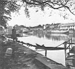
Pålsundet från sydost
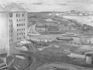
Långholmsvarvet. Oljemålning av Gideon Börje 1923
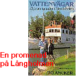
Följ med!
|
|
|
{kind=link}
{kind=link}
{kind=link}
{kind=link}
{kind=link}
{kind=link}